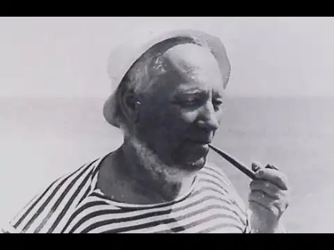

Янка Мавр (1883-1971)
Білоруський робінзон
Янка Мавр — першовідкривач пригодницького жанру в білоруській літературі, творець першої білоруської науково-фантастичної повісті. Автор книг для дітей, п'єс, перекладів. Його називали білоруським Миклухо-Маклай і Жюлем Верном. Він був відомим есперантистом, любив їздити на велосипеді і чудово грав на скрипці. Він не був у далеких країнах, але подарував нам чудові екзотичні історії, дія яких відбувається в джунглях і на океанських островах ... Можливо, якби він жив в інший час і в іншій країні, став би капітаном далекого плавання, великим першопрохідцем і відкривачем. Але він став білоруським письменником, чия юність припала на революційні роки, а письменницька кар'єра — на період соцреалізму в літературі. Біографія Народився Янка Мавр (Іван Федоров) 10 травня 1883 року в місті Лібава (зараз Лієпая в Латвії) в сім'ї столяра. Батько письменника рано помер, і мати повернулася з сином у своє рідне село Лебанішкі Ковенської губернії (тепер — Литва). Янка закінчив початкову школу, ремісниче училище в Каунасі, а потім вступив до Паневезького вчительську семінарію, з якої його виключили з останнього курсу за вільнодумство. У 1903 році склав іспити екстерном. У 1903-1906 роках був учителем. За участь в 1906 році разом з Якубом Коласом в нелегальному з'їзді вчителів був позбавлений права викладати. Тільки в 1911 році йому вдалося влаштуватися працювати в Мінську приватну школу торгівлі учителем географії та історії. Після Жовтневої революції працював в республіканському союзі працівників освіти, в Білоруському державному видавництві. У 1923 році дебютував як фейлетоніст в газеті "Советская Белоруссия" і ленінградському журналі "Бегемот". У 1926-1927 роках в журналі "Білоруський піонер" надрукував першу повість на білоруській мові "Людина йде! ..", яка задумувалася спочатку як своєрідний навчальний посібник про доісторичні часи. Читацький успіх був величезним. На журнал обрушився шквал листів: юні читачі просили друкувати продовження. Кожне нове його твір користувалося незмінною популярністю. Пісательхорошо знав дитячу психологію, завжди на рівних спілкувався зі сторінок своїх книг з дітьми і говорив про них: "Хоць малі, а чалавекi". Розповіді "Сльози Тубі", "Незвичайна приманка", "лаццароні", повісті "В країні райського птаха", "Син води", перший в білоруській літературі пригодницький роман "Амок" знайомили читачів з різними екзотичними країнами. Мавр мав великі знання з історії та географії, використовував у творчості мемуари та книги спогадів вчених, мандрівників. Навіть справжні мандрівники дивувалися точності деталей, що описують ту чи іншу країну в творах Янки Мавра. На дачі неподалік від Мінська Янка Мавр спорудив курінь-кабінет з лози. Імпровізований письмовий стіл стояв на містках над Свіслоч, так що можна було складати книги про далекі країни, звісивши ноги в воду і уявляючи себе на березі океану. Величезну популярність здобули його повісті "Поліські робінзони" і "ТВТ ...". У 1934 році вийшов фільм "Поліські робінзони", сценаристом якого став Янка Мавр. Казка "Вандраванне па Зоркий", "Повість майбутніх днів" і повість "Фантомобіль професора Ціляковского" заклали основи науково-фантастичного жанру в білоруській літературі. У творчій скарбничці автора є п'єси "Помилка", "Будинок на околиці", "Базіка", переклади на білоруську мову творів відомих російських письменників (А. Чехова, М. Пришвіна, Д.Маміна-Сибіряка), а також зарубіжних (Р. Кіплінга, Твена, Ж.Верна і ін.). Янка Мавр помер 3 серпня 1971 року. Похований в Мінську на Східному кладовищі.